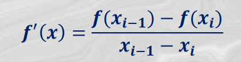
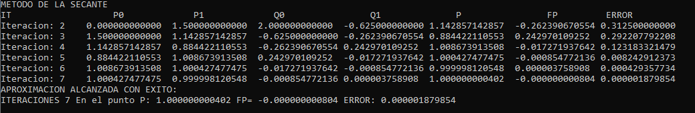
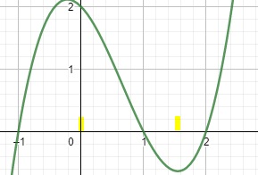
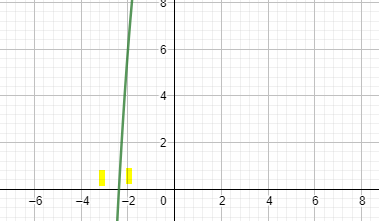
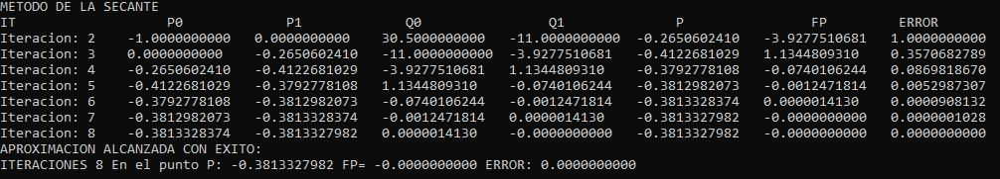
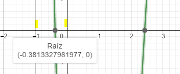

La recta secante es una recta que corta a una circunferencia en dos puntos. Conforme estos puntos de corte se acercan, dicha recta se aproxima a un punto y, cuando solo existe un punto que toca la circunferencia, se le llama tangente.
En análisis numérico el método de la secante es un método para encontrar los ceros de una función de forma iterativa. El método se basa en obtener la ecuación de la recta a la cual se le conoce como secante por cortar la gráfica de la función. Posteriormente se escoge como siguiente elemento de la relación de recurrencia, xn+1, la intersección de la recta secante con el eje de abscisas obteniendo la fórmula. Este método, a diferencia del de bisección y regla falsa, casi nunca falla ya que solo requiere de 2 puntos al principio, y después el mismo método se va retroalimentando. Lo que hace básicamente es ir tirando rectas secantes a la curva de la ecuación que se tiene originalmente, y va checando la intersección de esas rectas con el eje de las X para ver si es la raíz que se busca. El método de la secante parte de dos puntos (y no sólo uno como el método de Newton) y estima la tangente (es decir, la pendiente de la recta) utilizando la aproximación: 
ENTRADA: Aproximaciones iniciales p0 y p1; Tolerancia TOL Cantidad máxima de iteraciones IT SALIDA: Solución aproximada p o mensaje de fracaso
HACER i = 2
q0 = f(p0)
q1 = f(p1)
MIENTRAS i <= IT REPETIR
HACER p = p1 – q1(p1 – p0) / (q1 – q0)
SI |(p – p1)/p| < TOL ENTONCES
SALIDA(p)
PARAR FIN SI … ENTONCES
HACER i = i + 1
HACER p0 = p1
HACER q0 = q1
HACER p1 = p
HACER q1 = f(p)
FIN MIENTRAS
SALIDA (“El método falló después de IT iteraciones”)
PARAR
Hallar por el método de la secante la raíz de la siguiente función f(x)= x^3 - 2x^2 - x + 2 partiendo de P0=0 y P1=1.5 con una tolerancia de 10^-5

como se puede observar en la gráfica elegimos dos puntos en los cuales en medio se encuentra la raíz por lo que la respuesta se consigue en 7 iteraciones en el punto P=1. La respuesta es con 10 decimales.
Hallar por el método de la secante la raíz de la función f(x)= x^3 + x +16 partiendo de los puntos P0=-3 y P1=-2 con una tolerancia de 10^-5.

Jallar por el método de la secante la raíz de la función f(x)=-2.5x^3 + 17x^2 - 22x - 11 partiendo de los puntos P0=-1 y P1=0. Con una toleracia de 10^-10.


Este código esta implementado para utilizarlo en visual basic 2017 en el lenguaje de programación C++. Tiene una precisión de 10 decimales.
Encuentre los links para que les sirva de referencia por alguna consulta con el desarrollo del método.